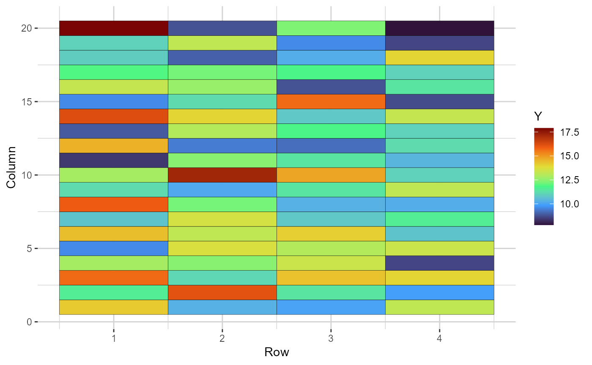
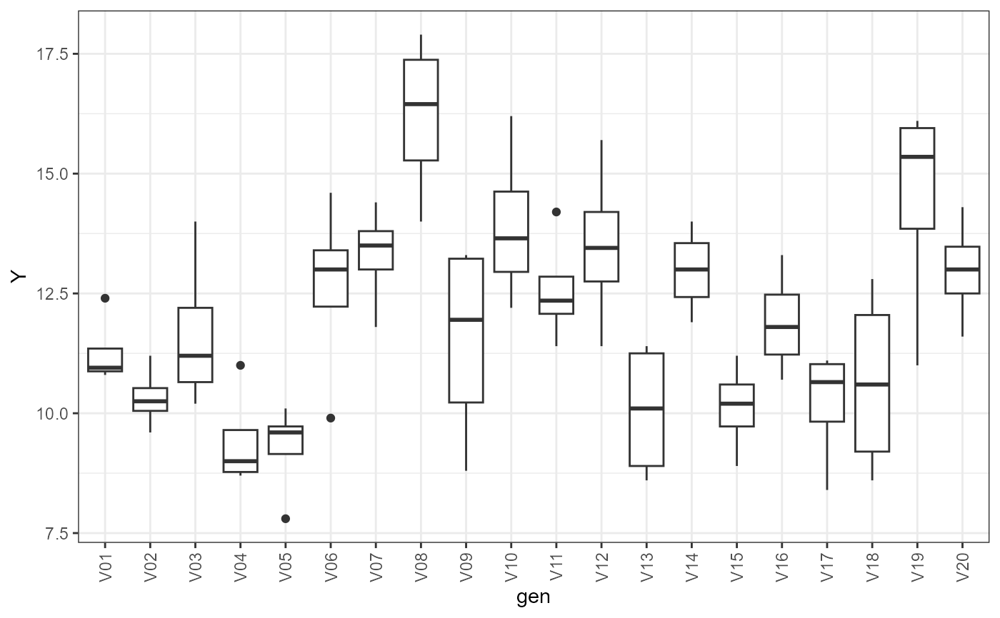

The function generates two types of plots: i) a heatmap representing the grid. The cells are filled according to the phenotype value of each plot; and ii) boxplots depicting the performance of each selection candidate
# S3 method for class 'comprepcrop'
plot(x, ..., category = "heatmap")ggplot2, prepcrop
# \donttest{
library(gencomp)
comps = prepcrop(data = potato, gen = "gen", row = "row", col = "col",
plt = NULL, effs = c("rep", 'matur'), trait = "yield",
direction = "row", verbose = TRUE)
#>
Running through the grid --> = | 1%
Running through the grid --> == | 2%
Running through the grid --> === | 4%
Running through the grid --> ==== | 5%
Running through the grid --> ===== | 6%
Running through the grid --> ====== | 8%
Running through the grid --> ====== | 9%
Running through the grid --> ======= | 10%
Running through the grid --> ======== | 11%
Running through the grid --> ========= | 12%
Running through the grid --> ========== | 14%
Running through the grid --> =========== | 15%
Running through the grid --> ============ | 16%
Running through the grid --> ============= | 18%
Running through the grid --> ============== | 19%
Running through the grid --> =============== | 20%
Running through the grid --> ================ | 21%
Running through the grid --> ================= | 22%
Running through the grid --> ================== | 24%
Running through the grid --> ================== | 25%
Running through the grid --> =================== | 26%
Running through the grid --> ==================== | 28%
Running through the grid --> ===================== | 29%
Running through the grid --> ====================== | 30%
Running through the grid --> ======================= | 31%
Running through the grid --> ======================== | 32%
Running through the grid --> ========================= | 34%
Running through the grid --> ========================== | 35%
Running through the grid --> =========================== | 36%
Running through the grid --> ============================ | 38%
Running through the grid --> ============================= | 39%
Running through the grid --> ============================== | 40%
Running through the grid --> =============================== | 41%
Running through the grid --> =============================== | 42%
Running through the grid --> ================================ | 44%
Running through the grid --> ================================= | 45%
Running through the grid --> ================================== | 46%
Running through the grid --> =================================== | 48%
Running through the grid --> ==================================== | 49%
Running through the grid --> ===================================== | 50%
Running through the grid --> ====================================== | 51%
Running through the grid --> ======================================= | 52%
Running through the grid --> ======================================== | 54%
Running through the grid --> ========================================= | 55%
Running through the grid --> ========================================== | 56%
Running through the grid --> =========================================== | 57%
Running through the grid --> =========================================== | 59%
Running through the grid --> ============================================ | 60%
Running through the grid --> ============================================= | 61%
Running through the grid --> ============================================== | 62%
Running through the grid --> =============================================== | 64%
Running through the grid --> ================================================ | 65%
Running through the grid --> ================================================= | 66%
Running through the grid --> ================================================== | 68%
Running through the grid --> =================================================== | 69%
Running through the grid --> ==================================================== | 70%
Running through the grid --> ===================================================== | 71%
Running through the grid --> ====================================================== | 72%
Running through the grid --> ======================================================= | 74%
Running through the grid --> ======================================================== | 75%
Running through the grid --> ======================================================== | 76%
Running through the grid --> ========================================================= | 78%
Running through the grid --> ========================================================== | 79%
Running through the grid --> =========================================================== | 80%
Running through the grid --> ============================================================ | 81%
Running through the grid --> ============================================================= | 82%
Running through the grid --> ============================================================== | 84%
Running through the grid --> =============================================================== | 85%
Running through the grid --> ================================================================ | 86%
Running through the grid --> ================================================================= | 88%
Running through the grid --> ================================================================== | 89%
Running through the grid --> =================================================================== | 90%
Running through the grid --> ==================================================================== | 91%
Running through the grid --> ==================================================================== | 92%
Running through the grid --> ===================================================================== | 94%
Running through the grid --> ====================================================================== | 95%
Running through the grid --> ======================================================================= | 96%
Running through the grid --> ======================================================================== | 98%
Running through the grid --> ========================================================================= | 99%
Running through the grid --> ==========================================================================|100%
plot(comps, category = 'heatmap')

plot(comps, category = 'boxplot')

# }